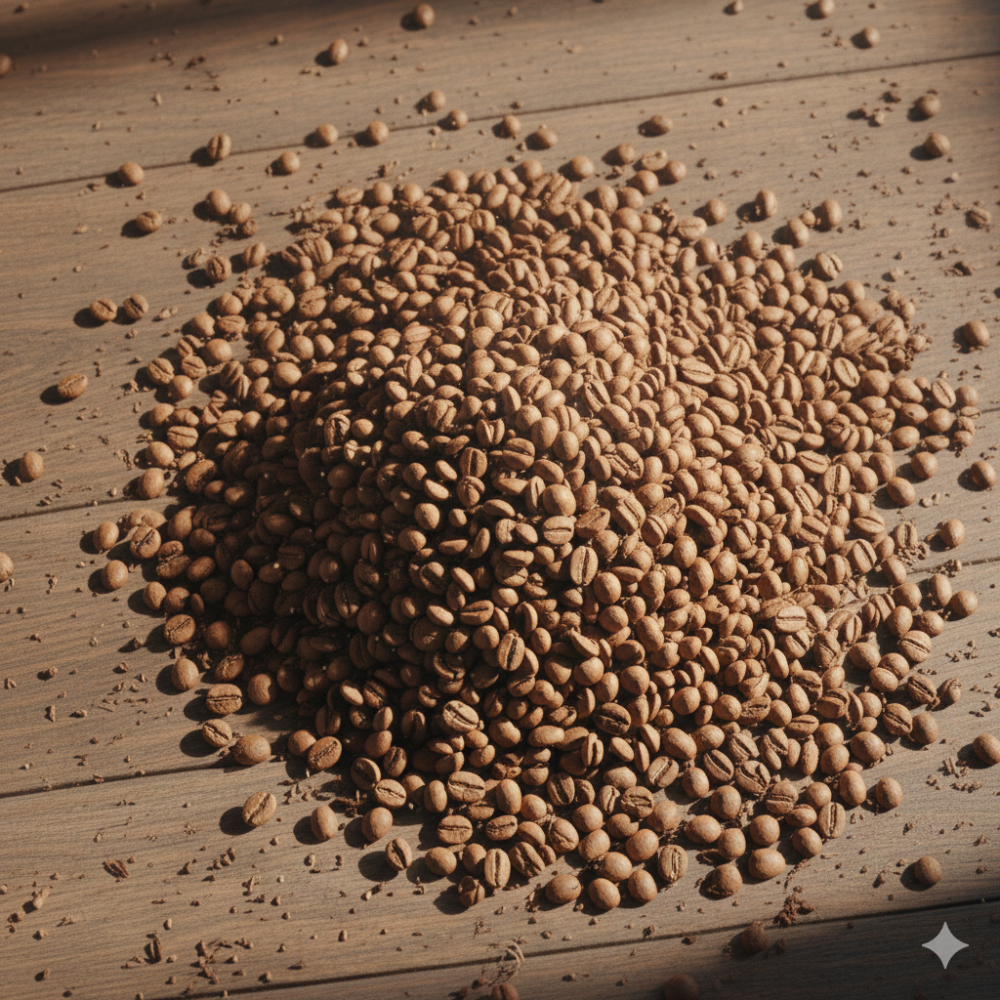
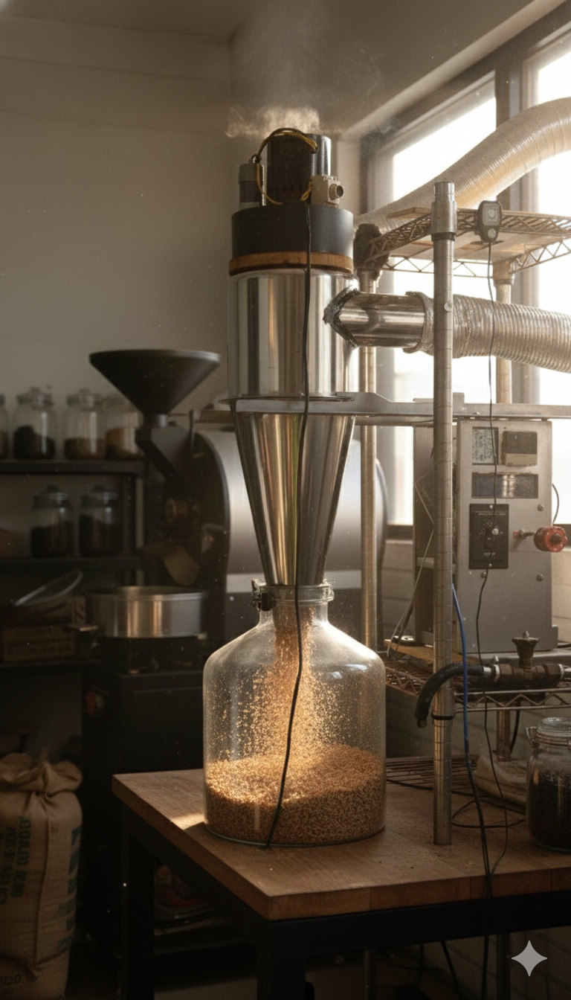
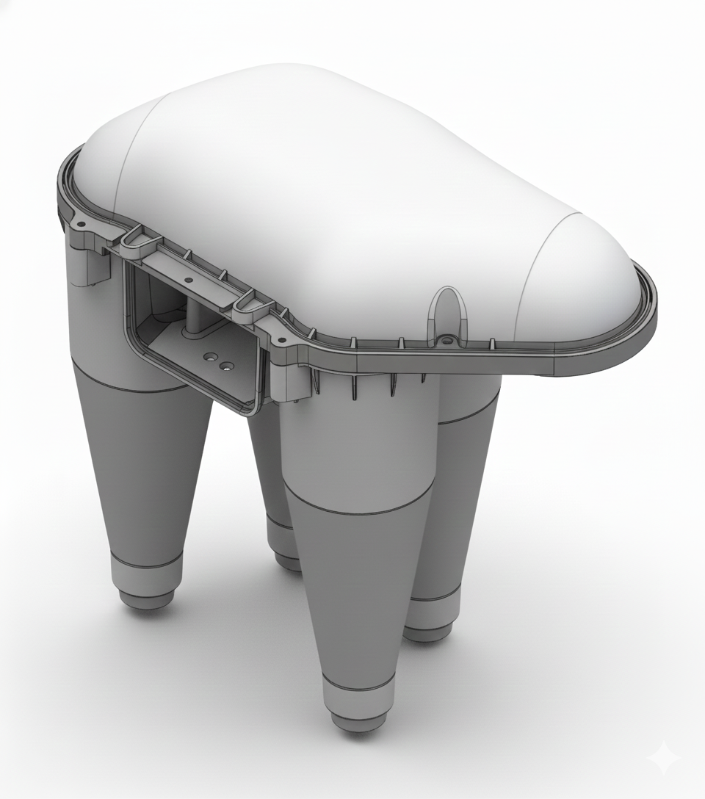
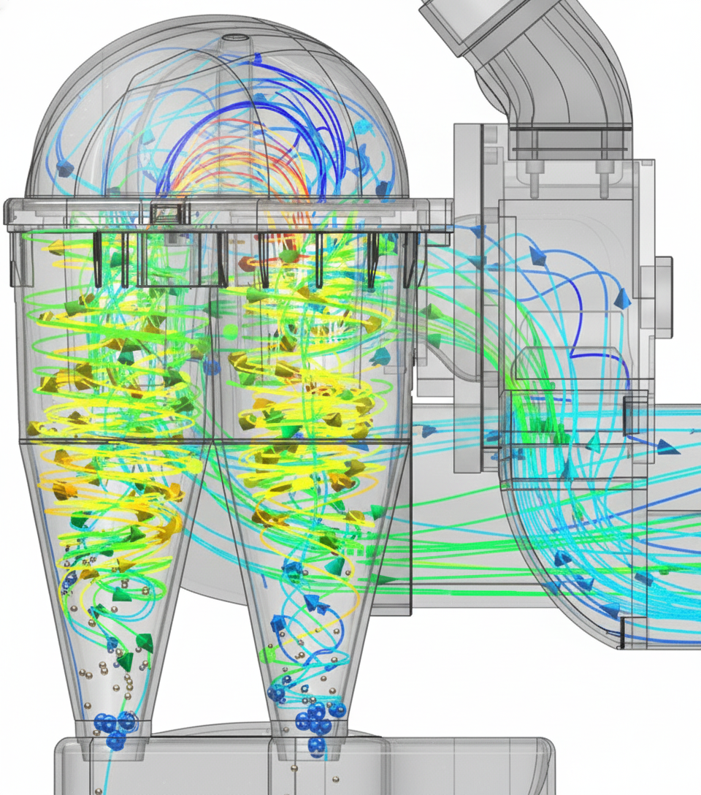

Client
客戶
Coffee Roaster Designer
烘豆機設計
Date
年份
2024
Role
擔任角色
Product Designer
產品設計師
Material
主要材質
Aluminum / PC
鋁合金 / PC

The Context
Coffee Chaff - Large volume of lightweight waste generated during
roasting.
咖啡銀皮 (Chaff) - 烘豆過程產生的大量輕質廢棄物。

The Solution
On-site Achievement - Transparent management of collected chaff.
現場實績 - 實際導入後的收集狀況，透明化管理。

The Design
3D Structure - Multi-tube cyclonic separator designed for silver skin
properties.
3D 結構設計 - 針對銀皮特性設計的多管式旋風分離器。

The Science
Flow Validation - CFD simulation ensuring airflow paths meet
expectations.
流場驗證 - 透過 CFD 模擬確保氣流路徑符合預期。
Got something similar in mind? 你也有類似的想法？
Take 2 minutes to map out your idea. I'll tell you if it's buildable. 花 2 分鐘釐清你的需求，我幫你看看能不能做。
Map My Idea 釐清我的想法